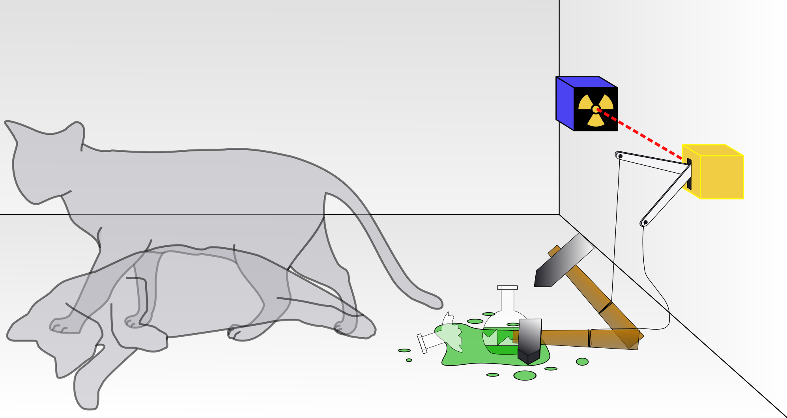

The cat exists in a superposition of alive and dead until observed. Opening the box constitutes a measurement. The wavefunction collapses to one definite state. Before measurement, neither state is more "real" than the other.
The wavefunction never collapses. Instead, the universe splits: in one branch the cat is alive, in another it is dead. Both outcomes are equally real — the observer themselves enters superposition with the cat. There is no collapse, only branching.
A macroscopic cat interacts with ~10²³ air molecules per second. Each interaction entangles the cat with its environment, destroying quantum coherence almost instantly (~10⁻³⁰ s). Real superposition is impossible at cat scale — the thought experiment reveals the measurement problem.
Schrödinger's equation is deterministic and reversible — it never shows collapse. Yet we always observe definite outcomes. Why does measurement yield a single result? This remains one of quantum mechanics' deepest unresolved questions, debated since 1926.
